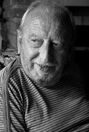

¡Nuevo! Cuento de Navidad: ¡Algo habrá hecho!
Cuento de Navidad: ¡Algo habrá hecho!
Su casa, en la que ahora vivía, se prestaba para festejar este cumpleaños de reconciliación. Son bastantes años los ochenta y la ocasión
de la Navidad como para decir no concurro al convite. Desde temprano puso el lechón en la parrilla. Regalitos para los que integraban su familia.
Hijos, nueras, yernos e incontable número de nietos. Todos avisados con tiempo a través de mensajes al celular.
La cita a las veintidós. Sobre una mesa diversas y coloridas ensaladas eran como una prolongación del verdor del pasto cortado al ras.
Otra de dulce para contrarrestar el salado sabor de la comida. Vinos y bebidas sin alcohol para todos los gustos.
El placer de escuchar su música preferida lo acompañaba en la tarea. No era mucha la labor ya que el cerdo ya conocía su destino y sabía esperar
para complacer a sus destinatarios. Se empezó a inquietar cuando el reloj marcaba las 11 y 30 horas. Pensó en imprevistas situaciones que, a menudo,
retrasan los encuentros. A la media hora salió a la calle. El teléfono no sonaba. A medianoche pasaban los recolectores de residuos.
Cuando llegaron los invitó al asado que aceptaron con gusto indicando que sólo tenían 45 minutos para acompañarlo.
Algo quedaba en la parrilla cuando se acostó a dormir.
Anterior
EL ENCUENTRO Y LA MEMORIA
por Alberto Fernández (Argentina)
-¿Me recordás?
-Siempre estás en mi memoria. Este encuentro no es casual. Vine a ver a Resnais. La nouvelle vague eran las películas de nuestro gusto.
-¿Venís a recordar la similitud de nuestro primer encuentro? Éramos muy jóvenes.
-¿Estás arrepentida de haber sido joven?
-No. Tampoco de nuestra relación. Pero hubiera hecho más.
-Te referís a lo nuestro o a qué cosa.
-A las dos cosas. Prolongar nuestra relación y la lucha en favor de nuestras utopías.
-Siempre quedan sin concretar. Los celos y las peleas nos traicionaron. Sobre nuestra militancia en campos distintos.
-Eran diferentes pero habían muchas razones en común. Recuerdo aquella manifestación relámpago cuando caminábamos separados con compañeros y de pronto gritábamos consignas y arrojábamos panfletos.
-Sí, te tomé del brazo cuando sentimos las sirenas y caminamos abrazados como simples novios. La emoción de sentir tu cuerpo muy junto al mío y el miedo de no engañar a la policía.
-Fue un momento de tanta emoción que todavía lo recuerdo. Nos metimos en un bar y muy asustados pedimos algo.
-¿Te casaste?
-Sí. Apenas me recibí. Con Carlos. Tuvimos tres hijos. Luego el desencuentro, la incomprensión referente al ejercicio de mi carrera destrozaron los lazos que nos unieron. La separación fue traumática. Manejamos muy mal esa ruptura. Incluimos a los chicos en nuestras riñas. A él lo contrataron en Inglaterra y no supimos más de Carlos. Ahí me tenés asumiendo todo: educación, mantenimiento. Cuidando su desarrollo incompleto de la figura paterna. Defendiéndome de una culpabilidad que observo a veces en sus comportamientos. Igual me va muy bien en la profesión.
-Resolviste como mujer otra nueva relación de pareja?
No, nada definitivo. Todo ese proceso estuvo muy bien vigilado por los hijos que de un modo u otro me hacía sentir que para ellos el padre era irremplazable. Seguían coleccionando viejas fotos. ¿y, a vos?
-Los años pasaron y todavía te recuerdo con guardapolvo blanco y un moño, Ahora somos adultos con la carga de responsabilidades. No pude darme cuenta que esa transición dejaba atrás un ayer sin disfrutar a pleno. También me casé, lo que era de rigor. Helena venía de una infancia holgada y tuve que afrontar esa situación sin ninguna carencia. Como darle algo igual a lo que había perdido. Por todo ello dejé la facultad faltando dos años. Tuvimos dos hijas que periódicamente las visito. El divorcio: “incompatibilidad de caracteres”. Ella dice como amigos. Tal vez pero yo la extraño como mujer. Estoy cursando las últimas materias tal vez para curarme yo mismo de la nostalgia. No encuentros los libros de esa especialidad.
-Bueno, gracias por los recuerdos. Es la hora que salen los niños de la Escuela. Hasta la próxima “nouvelle vague.
-A las niñas las veré mañana domingo y les prometí llevarlas al Ballet del Colón. Un beso y hasta las próximas reprises de la nouvelle vague.
Fotografía de María Griselda García Cuerva
LLANTO DE MUJER
Disfrutaba del habitual paseo en mi pequeño auto. Volvía desde la roca donde se divisa la salida del Sol. Gocé del espectáculo que la naturaleza nos ofrece
día por día. Cuando ya el disco rojo dejó ver la perfección de su geometría, partí. Era la hora del domingo donde no hay gente por las calles.
Tomé el camino alto, en los bajos de mi izquierda un horizonte de agua. Camino a casa pasé por la plaza del Libertador, la única del pueblo.
Allí, sentada en un banco, una mujer lloraba. La cabeza entre sus manos. La vida feliz, tal vez, se había escapado de su morada.
Un pájaro cortó al cielo en recta línea rumbo a la soledad. Árboles, flores y grama eran mudos testigos.
Imaginé que no era yo quien debía detenerse a mitigar con palabras su desconsuelo. Ya en mi escritorio escribí un poema.
Lo que tenía que decir lo vertí en cada verso. Cuando lo hube acabado lloré. Su aflicción arrugó mi corazón.
CON EL JEFE DE ESTACIÓN
-Señor, ¿Qué espera?
-Como he visto estas vías, supongo que pasa el tren por acá y lo lógico es que pare en la estación.
-Me diría hacia dónde debe ir.
-Voy a la localidad de Prince.
-No creo que pase el tren, por ahora.
-¿Cómo hago entonces para llegar a Prince?
- Le diré que yo como ex jefe de estación, jubilado claro está, estoy enterado del formidable proyecto que elaboraron los mejores especialistas de un tren que, a velocidades asombrosas, lo llevaría a usted a Prince.
-Usted cree que me llevaría a Prince.
-Como que me llamo Ferretti. No solo a Prince hasta eso sí, si quiere, a la misma Europa.
-¡Qué interesante! ¿Y si hubiera alguna guerra?
-Todo está pensado en el proyecto. Detectaría el ruido de los misiles y seguiría por debajo de la tierra.
¿Y, el mar que nos separa?
-Señor, la máquina tunelera es un prodigio de la tecnología, raro que no la haya visto. Ahora no funciona por la falta de un tornillo que viene del África.
-Entonces ¿Qué me aconseja para llegar a Prince? Aunque no sería mala la idea de visitar a Europa.
- Yo le diría que espere la concreción del proyecto.
-¿Puedo esperar en ese asiento?
-Está un poco roto por las lluvias, vió. Eso también está contemplado en el proyecto.
-¿También lo de las lluvias?
-No, lo de los asientos.
Una imborrable mujer
Le pareció que ella hubiese entrado. No era posible. Había muerto diez años atrás.
Él recordaba aún la tersura de una piel juvenil. La fina cintura que ceñía con su brazo.
El concierto debía empezar en cinco minutos. Él, ahora, se sentó junto a Susana. El murmullo oculto cada vez más en los rincones.
Las luces languidecían, segundo a segundo, para preparar el ámbito oscuro del teatro.
Los músicos arrancaban de sus instrumentos sonidos inconexos, irritantes, enfadosos. Parecían ejecutar el contrasentido de las melodías del atril.Sentado con Susana, a través de la penumbra, creía ver a la sombra caminar solitaria desenrollando su blancura de piel por los pasillos.
La figura sin vínculos visibles.
Llegaba al concierto con la que hoy es un sueño. Las miradas se posaban en ella. Vestido blanco, níveos zapatos. Al estrecharla la ubicaba en la butaca.
El junco encontraba el lugar junto al lago.
Los espectadores envejecieron diez años. Ese mismo lapso los músicos. El Director descubría en sus espaldas el destructor paso del tiempo. Tan sólo una década.
La única que aparecía, con su juventud imperecedera, era esa alba figura. Entró sin ser percibida. Con la gracia de siempre. La belleza arrollada a su cuerpo.
La sala del teatro colmada de espectadores. Él pensó que no había un solo lugar para la sombra, sin embargo, ella subió
los escalones y se sentó en el último de ellos. Acomodó el vestido.
¿Cuánto era ese espacio de tiempo? Sólo una corta existencia personal salpicada de dolores y alegrías, placeres y aflicciones.
Un concierto en la arena. Desde el horizonte del mar se acercaba aquella, a paso lento, por sobre las aguas aquietadas tras su andar.
Susana le pedía a él que disfrutara de la música y la belleza de la luna llena cayendo lentamente sobre el lejano fin aparente de las aguas.
Pero esa estampa fantasmal se lo impedía.
¿Por qué debía mirar la caída de la luna grande sobre el negro horizonte del océano?
Mejor deleitarse con la imagen blanca que se acercaba.
Blog personal de Alberto Fernández: www.besameotravezingrid.blogspot.com
Esto es un relato inédito. Reservados todos los derechos.
 |
La historia personal que el autor me obsequió.... Soy escritor (o mejor, artesano de las palabras) y ya en editorial, mi tercer libro de cuentos. |